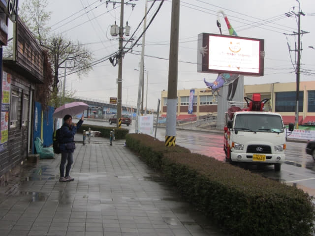

巴士準時在下午一時五十五分駛離海南綜合巴士客運站, 於下午四時抵達順天綜合巴士客運站, 從上車到下車, 天空一直下著大雨。想起兩年前秋天在順天逗留了四天, 其中三天都是下雨, 而且有兩天更是傾盆大雨, 想不到這次在春天舊地重臨, 同樣以大雨來迎接我們。其實, 最令我們擔心的是: 天氣預測未來幾天都是下雨!唯有安慰自己, 天氣預測一般都是不準確的!
我們在順天安排了下榻在火車站對面小巷內的一間 Guest House, 名稱是 Suncheon Guesthouse Happy Tour (逍遙遊順天賓館) [看價錢], 將會住宿四晚。選擇這 Guest House 的最主要原因是價格便宜, 每晚房租不到港幣二百八十元, 而且還包括早餐! 畢竟是四晚, 所以盡量找一間便宜旅館, 省回一些旅費。
順天綜合巴士客運站內的置物箱也是用指紋識別密碼的! 唉! 怕怕了!
順天綜合巴士客運站面積很大, 旅客川流不息, 十分熱鬧。

離開順天綜合巴士客運站, 沿大街朝火車站的方向走, 這裡在兩年前都給我們走爛, 對四周環境仍然十分熟悉, 不用地圖也可以走到賓館。
順天下集市 (순천아랫장)
沿馬路走了一會, 經過馬路對面順天下集市, 最熟悉的是那高高的鶴, 感覺十分親切! 稍後我們便來順天下集市找我們上次認識的老朋友, 不知她的餐廳會否和兩年前同樣那麼熱鬧。

順天東川 (순천동천)、豐得橋(풍덕교) 燦爛櫻花
走過 順天下集市, 來到橫躺順天東川兩岸的豐得橋橋頭。眼前一亮, 和兩年前秋天來的時候, 雖然是同一地點, 但景色截然不同, 更美, 更動人! 順天東川兩岸都是連綿不絕的粉紅色櫻花, 漂亮極了! 來到這旅程的第十四天, 終於看到期望中的燦爛櫻花!
沿豐得橋慢慢的走, 慢慢的欣賞兩岸燦爛櫻花, 在煙雨淒迷下, 感覺更富詩意、更優美! 雖然是下著大雨, 身邊經過的汽車不時濺起水花, 仍忍不住停下來欣賞和拍照。

來到豐得橋另一邊的橋頭, 景色和在橋上所看的又不同。
離開豐得橋, 繼續沿馬路一直走。
Suncheon Guesthouse Happy Tour (逍遙遊順天賓館)
這時雨越下越大, 行人道也已經水浸, 不可能再拍攝了, 唯有收起相機, 慢慢向前走往賓館。來到順天火車站對面的街道, 看見兩年前曾在這裡兌換韓元的 NH Bank, 便轉右沿銀行旁的小巷走, 走了一會, 一座樸素的五層高大樓就在左邊閃出, 看看門前的招牌, 只看懂 Guest House 這兩個英文字, 心想這裡便是 Suncheon Guesthouse Happy Tour 了!
因當時下著傾盆大雨, 無法拍照, 這照片是明天黃昏補拍的。